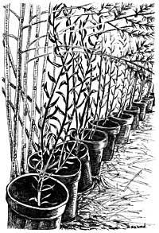

Bootstrap Business: Earn Cash With Your Own Garden-Grown Nursery
Our 3,000-square-foot garden produces about three-quarters of the vegetables we eat in a year - and a bumper crop of nursery stock that brings us up to $1,000 of extra cash annually.
By Jean English
December/January 2004
Our 3,000-square-foot garden produces about three-quarters of the vegetables we eat in a year - and a bumper crop of nursery stock that brings us up to $1,000 of extra cash annually. You, too, can easily earn a tidy sum by intercropping fruit tree saplings and woody ornamentals in your garden. Growing woody plants to sell also has an advantage over growing vegetable crops: If you don’t sell the woodies one year, you can keep them for another year or two, and often sell them for even more because they’ll be bigger.
Most nursery crops can be planted in rows about 3 feet apart in the garden, and you can use the space between some of these rows for vegetable crops. Sow lettuce or spinach, for example, between every other row of nursery crops. Leave the alternate rows unplanted so there’s a place for you to move about while tending both the nursery and vegetable crops.
When I started growing nursery stock, I sold potted plants at the local farmer’s market. I used two weathered oak boards straddling two rustic wooden barrels as my stand, and I displayed the plants - along with some flowering perennials - on top of the boards and on the ground in front of the display. The attractive setup added a unique flair to my display, and to the market.
By the time my two children were born, though, I was less inclined to spend summer Saturdays at the market. We are lucky to have a plant nursery co-op, Fedco Trees [(207) 873-7333; www.fedco seeds.com/trees.htm], so I switched to selling my bare-root stock through Fedco. This is a great outlet because I can dig up plants from my garden in the fall after they are dormant, shake the soil from their roots (thus saving a valuable resource in the garden) and send the bare-root plants to the Fedco warehouse, where they are stored until they’re ready to ship in the spring. Fedco takes care of all the marketing through its catalog. I receive a check for my efforts in late winter, after Fedco has received and tallied its orders for the year. This enterprise can be a good adjunct to a commercial vegetable operation, because it brings in cash when most vegetables aren’t in season.
Lacking a local nursery co-op, you might consider potting some plants in the spring and selling them from your home through the growing season. (Woody plants that are growing in the ground have to be dug and potted - or sold bare-root - when they are dormant; most won’t survive being dug after they have leafed out.) Our local paper carries an ad from someone who sells 6-foot-tall weeping willows for $25 each - half the price charged at a local retail nursery. I know a couple who specialized in azaleas, growing a few hundred in pots each year and selling them in the spring by advertising in the local paper. Another enterprising local gardener sells potted pine trees, advertising with a sign at the end of his driveway.
Or you could establish your own catalog (or form your own co-op). Start with one, two or three specialty woodies and work your way into the business as time, space and funds allow.
What to Grow
Do some research to decide the best woodies to grow for your area. Visit nurseries and arboreta in your area to see what catches your fancy. Go on garden tours. Read catalogs and gardening magazines. Talk with Master Gardeners and Extension agents. A plant may be attractive to you because of its fragrance, shape or color, or because it feeds wildlife or reminds you of some special childhood memory. Among the plants that have “called out” to me are bayberry, white oak and willow. Birds love bayberry’s pewter-colored berries, which were used in candle-making in colonial New England. White oak features a majestic growth habit and strong wood. Willows are appealing for their many sizes, shapes, colors, uses (as in basket-making) and ease of growth. Clethra is attractive for its fragrance.
Be sure to select plants that do well in your local conditions - you’ll lose customers quickly if you offer species that aren’t winter-hardy in the North or drought-tolerant in the Southwest. On the other hand, you’ll do your customers a huge service by researching and offering top varieties for your region’s normal growing conditions.
Once you find a few plants that appeal to you, learn as much as you can about them. My favorite resource is Michael Dirr’s Manual of Woody Landscape Plants: Their Identification, Ornamental Characteristics, Culture, Propagation and Uses. Plants are listed alphabetically by species (with an index of common names), and descriptions are concise, but the book is detailed enough to get you started.
After growing woody plants for several years, I have this tip to offer: Fast-growing, single-stemmed plants that do not produce suckers (underground runners that pop up around the plant) are the easiest and most profitable to grow. Bayberries are just the opposite: They sucker, and pulling weeds from among the suckers is difficult and time consuming. They also are low growing and have brittle stems that break easily, and they grow slowly so you are forced to wait a few years to get a return on your investment. In the meantime, perennial weeds easily become established in a row when you’re not digging plants out of it every couple of years. Still, I can’t seem to stop growing this handsome plant.
Propagating Woody Plants
To start plants from seed, look for good specimens growing in your area and ask homeowners if you can collect seed when it’s ready. Wyman’s Gardening Encyclopedia has an excellent section called “Seeds of Woody Plants” that discusses this subject in detail. It also has a valuable table of seed collection dates for Zone 5. For other areas, check with a woody ornamentals specialist at a land grant university. If you don’t want to collect your own seeds or can’t find them locally, you can order from a catalog.
Another good way to get started is to buy “liners” - young plants that have been propagated commercially - and “grow them out” until they’re large enough to sell. In most cases, you’ll get a saleable plant sooner by starting with liners rather than with seed stock.
Also, you don’t need a greenhouse, large windowsill or nursery bed in your garden to start these as seedlings; you can “line them out” in your garden as soon as they arrive. The drawback, of course, is the initial cost of the liners, which is not recouped until you sell them, perhaps in two or three years, or even longer.
Dirr describes in his book the best ways to propagate plants, and after a few times of doing it yourself, you’ll learn the processes. I learned that bayberry seeds should be collected in October and cold stratified (kept moist and cold) for 90 days before they will germinate. I collected my first berries from a large group of roadside shrubs, sowed them in a seeding medium just as you would sow tomato seeds, kept them in an unheated greenhouse over winter (watering occasionally when the medium wasn’t frozen), and in late spring they germinated. Seeds of many woody plants need this stratification period to break their dormancy.
If you don’t have a greenhouse, porch or other place where you can stratify seeds over winter, simply mix seeds with moist peat or a seed-starting mix, and put them in plastic bags. Then, store them in the vegetable drawer of the refrigerator for the winter. They’ll sprout when they’re ready - and sometimes before you’re ready. I’ve done this with bayberries and species roses, and ended up with seeds sprouting in February. These I had to grow in small flats on the windowsill because outside temperatures - even in the greenhouse - were still too cold for seedlings. Starting the stratification period later solves this problem.
After your seeds have sprouted in a small flat or plastic bag, transplant them to small pots and grow them until they’re large enough to move into the garden.
With some plants, such as some species roses, the transplant period could be midsummer of the first year of growth. Slower-growing plants, such as bayberry, should be grown in pots for a full year before they’re moved to the garden. You can overwinter them in their pots in an unheated greenhouse or cold frame.
As with vegetables, the traits of woody plants propagated from seed can vary. If you want to propagate a variety that is true to type, you’ll have to use some method of vegetative propagation, such as cuttings.
Some plants grow well from cuttings, which are pieces of stems - willows being the best example. In fact, willow stems that are soaked overnight in water exude a natural root-promoting chemical that can be used to water cuttings of other species.
Cuttings of woody plants that root well this way (check Dirr’s book for specifics) should be about 6 inches long. Some do best when taken during the succulent growth period in early summer. Others are better taken when the wood has hardened a bit.
For most woody ornamentals, a fertile garden soil will do. Some, such as rhododendrons, azaleas, mountain laurel and blueberries, require an acidic soil. If you want to grow this type and your soil has a more alkaline pH, you might be better off growing in pots, or in a separate plot than in your vegetable garden. The pots could be aligned on plastic mulch between the rows of vegetable crops to make the most of your garden’s space and to help keep weeds down in the garden. Remember that potted plants need water regularly, sometimes more than once a day. An automatic drip-irrigation system can be invaluable.
Whether you’re planting in the ground or in pots, good weed control is essential to a healthy garden. Good vegetable gardeners know the importance of weeding at least weekly to hoe out any undesirables while they’re small and you are able to easily pull them out of the ground. Otherwise, a small task becomes a huge job. When you’re growing perennial crops, regular weeding is even more important because you can’t give up on the plot and just mow it or till it under at the start of the following year because doing so will kill the nursery crops.
Be sure you obtain the proper permits to sell nursery stock in your area. In Maine, growers must obtain a nursery permit from the Department of Agriculture every year. An inspector comes around annually to check the quality of your plants and to offer advice to improve the quality and sustainability of your bootstrap nursery business. d
Jean English edits the newspaper of The Maine Organic Farmers and Gardeners Association (www.mofga.org). She also raises cut-your-own, certified-organic Christmas trees and nursery stock on her small farm in Maine.
Resources
Books and Periodicals
American Nurseryman
Published twice each month by American Nurseryman Publishing Co., this is the major trade magazine for the nursery industry. It features excellent articles, and you can look for local suppliers in its extensive advertising section. Its Web site, www.amerinursery.com, also links to advertisers.
Manual of Woody Landscape Plants: Their Identification, Ornamental Characteristics, Culture, Propagation and Uses
By Michael Dirr. Also offered as a compact disc called The Interactive Manual of Woody Landscape Plants.
The Reference Manual of Woody Plant Propagation
By Michael Dirr and C.W. Heuser Jr.
Wyman’s Gardening Encyclopedia
By Donald Wyman
Plant and seed sources
Lawyer Nursery
950 Highway 200 West
Plains, MT 59859 (800) 551-9875
www.lawyernursery.com
Plane View Nursery
770 Wapping Road
Portsmouth, RI 02871
(401) 849-2464
Transplants of rhododendron, kalmia, azaleas and lilacs.
The Fragrant Path (seeds only)
P.O. Box 328
Fort Calhoun, NE 68023
(catalog, $2)
Western Maine Nurseries
4 Nursery Lane
P.O. Box 250
Fryeburg, ME 04037
(800) 447-4745
www.westernmainenurseries.com
F. W. Schumacher
Seeds for Nurserymen and Foresters
36 Spring Hill Road, P.O. Box 1023
Sandwich, MA 02563
(508) 888-0659; Fax: (508) 833-0322
www.treeshrubseeds.com
The Web site includes excellent directions for treating seeds with cold stratification, warm stratification and sowing under glass.
 by Susan D. Szwed Potted willows, ready for buyers to take home, grow under the protective greenery of a neighboring asparagus patch. |
 Susan D. Szwed |
 Susan D. Szwed |